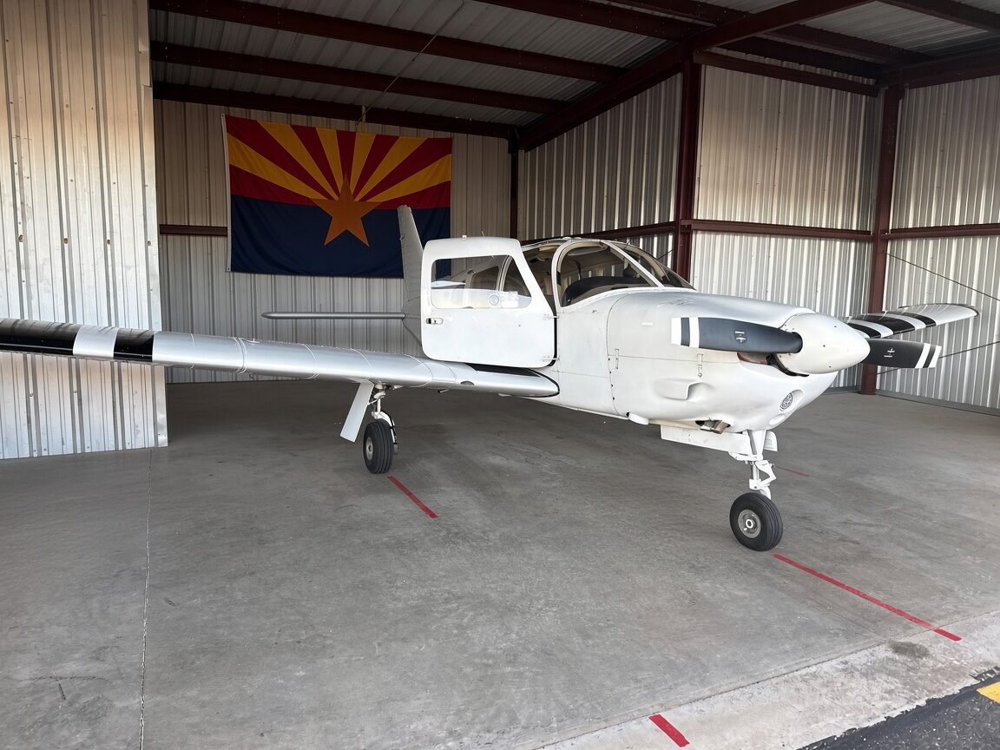

The Scottsdale Flying Club is a non-profit club at Phoenix Deer Valley Airport, flying a well-equipped 2004 Piper Arrow III. We fly it a long way, and we fly it for good causes.
The Club
- Based at Phoenix Deer Valley Airport (KDVT), Phoenix, Arizona
- A non-profit club, run by its members
- 2004 Piper Arrow III, N414WM — four seats, retractable gear, IFR equipped
- $120 per hour, dry rate, on Hobbs time
- $150 per month in dues
- Hangared on the north side of Deer Valley Airport
- Membership is capped at 15 pilots
- Monthly club meetings by Zoom, with in-person gatherings from time to time
- Scheduling is handled online through AircraftClubs
- Long trips are actively encouraged
The Aircraft
N414WM is a 2004 Piper Arrow III, 200 hp. The engine was overhauled in 2026. She trues out around 135 knots on 8.5 gallons an hour, which makes her a genuinely capable cross-country airplane rather than just a local hack. She is IFR certified, and the databases in the GPS units are kept current.
Panel
- Garmin G5 — electronic attitude indicator
- Garmin GNS 430 WAAS — primary navigator
- Garmin GNS 530 — secondary navigator
- S-TEC autopilot — nav mode, vertical speed and altitude hold
- JPI 830 — engine monitor
Further panel work is planned for 2026: a second G5, and a WAAS-capable GNS 530.
How We Fly
Long-distance flying is strongly supported here. Club pilots routinely take the Arrow to Northern California, Nebraska, Kansas and Michigan. Trips into Mexico are permitted.
Giving Back
The club has a strong charitable streak. Our pilots have flown many missions for Pilots N Paws and Flights for Life, using the Arrow to move animals and people who need to get somewhere and have no other way to get there.
From Scottsdale to Deer Valley
The club began at Scottsdale Airport, and kept the name. Exponentially rising costs there eventually drove us to move a short distance west to Deer Valley, purely so that we could keep flying as affordable as possible for our pilots. It was the right call, and we have not looked back.
Our Field
Phoenix Deer Valley is one of the busiest general aviation airports in the world, with a control tower and two parallel runways. That sounds intimidating on paper, but where you sit on the field makes all the difference.
Our hangar is on the north side, which is far less used than the south. In practice that means no queue to take off and no queue to land — you are not sitting at a run-up pad burning fuel behind eight training aircraft. The self-serve fuel pump is on the north side too, so fuelling up is a short taxi rather than a trek across the airport.
How the Club Runs
This is a friendly club and a small one, and it stays that way because members take part. We meet monthly by Zoom, with in-person gatherings from time to time, and members are expected to have a say in the decisions the club makes. Being non-profit, every dollar goes into the airplane rather than into a margin.